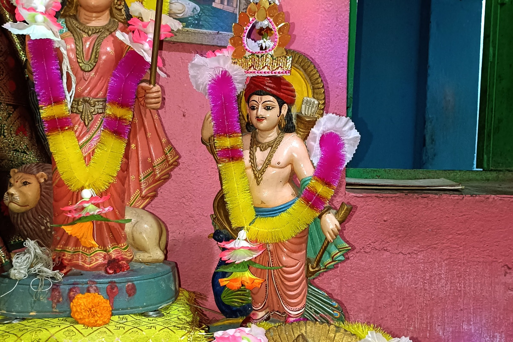
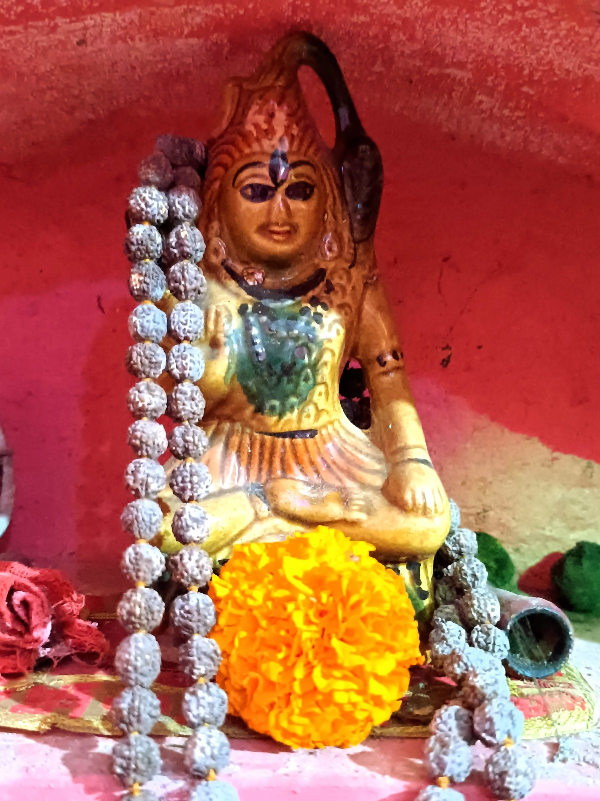
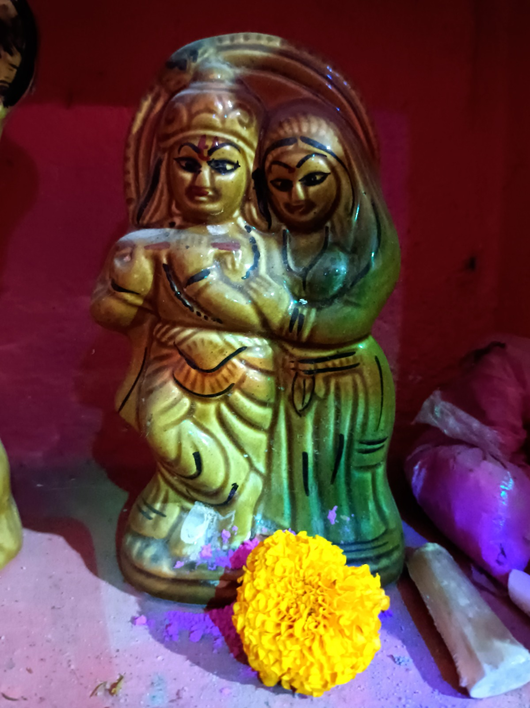
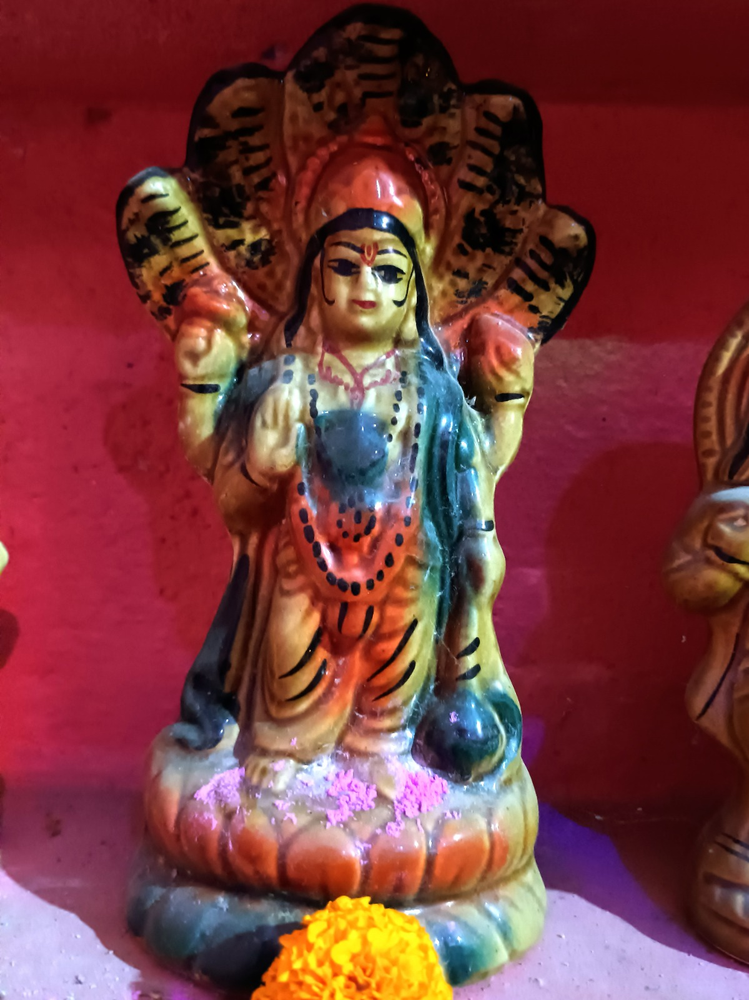

Lord Ganesha
God of Auspicious Beginnings.
He is worshipped first before any other deity.
God of Auspicious Beginnings.
He is worshipped first before any other deity.

Goddess of Wealth and Prosperity.
She brings happiness and good fortune.

Symbol of Strength and Protection.
She destroys evil forces.

God of War and Bravery.
Symbol of Youth and Courage.

Destroyer of Evil.
Embodiment of Divine Power and Symbol of Peace.

Goddess of Knowledge and the Arts.
She blesses devotees with knowledge and wisdom.

Maa Shitla is traditionally depicted riding a donkey. In one hand, she holds a broom, and in the other, a winnowing basket or a pot filled with water. The broom symbolises the removal of diseases and impurities, while the cool water from her pot represents relief from suffering and the calming of human troubles.
According to several Puranic traditions, she is a divine manifestation of Shakti described in The Skanda Purana.
According to popular belief, a devastating epidemic once spread across the Earth. Helpless people prayed to the gods for protection. The gods then sought help from Lord Shiva. Through his divine grace, a goddess appeared who could cool and soothe people’s bodies and minds and protect them from disease. She came to be known as Maa Shitala.
According to another belief, she is a special manifestation of Goddess Parvati, who descended to relieve the suffering of humanity.
In Bengal, Shitla Mata Puja is generally observed during the month of Chaitra. On the day of Shitla Puja, devotees offer prasad to the Goddess. The word "Shitla" means cool or soothing, symbolising peace and relief.
According to religious belief, Maa Shitla protects her devotees from diseases and epidemics when worshipped with devotion and reverence.
A commonly recited mantra dedicated to Maa Shitla is:
Om Shitalayai Namah.
Another devotional mantra is:
Om Hreem Shreem Shitalayai Namah.
Devotees believe that chanting these mantras with devotion and a peaceful mind brings the blessings and grace of Maa Shitala.
The story of Maa Shitla teaches us that health is our greatest wealth. Cleanliness, faith and humanity are essential in protecting ourselves from diseases. With devotion and humility, we believe that the blessings of the Divine Mother are always with us.


If you have any questions or concerns,
please feel free to contact us.
We will do our best to help you.
Email: shitla.mandir.varied646@passfwd.com
Give FeedbackView Today's Bengali Date and Calendar





Welcome to Choutala Shitla Mata Temple! This website is maintained by our family to share information about the temple's history, worship and religious events.
Come and experience this sacred place of devotion and peace.